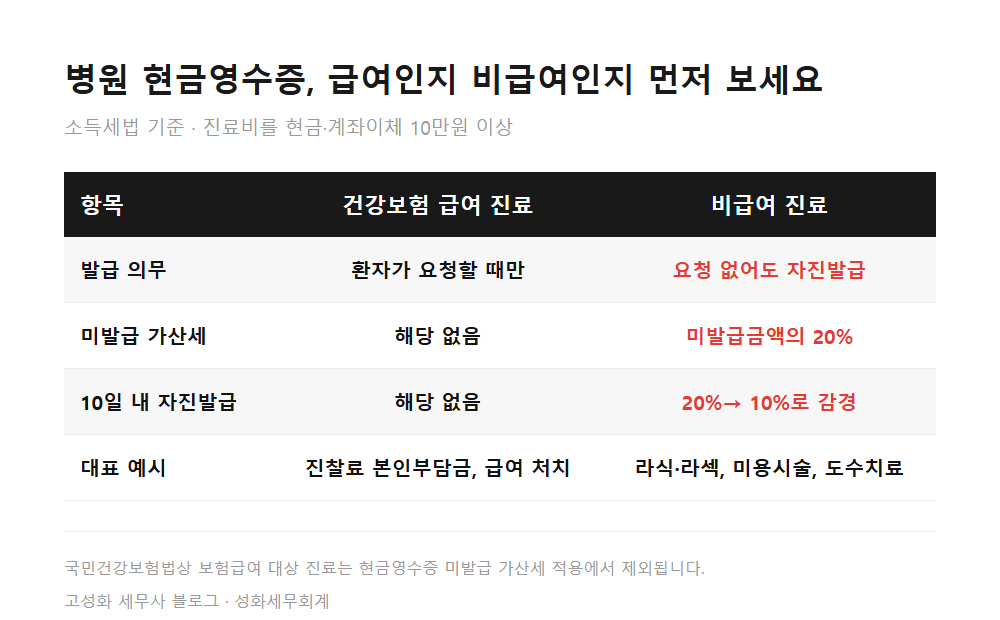
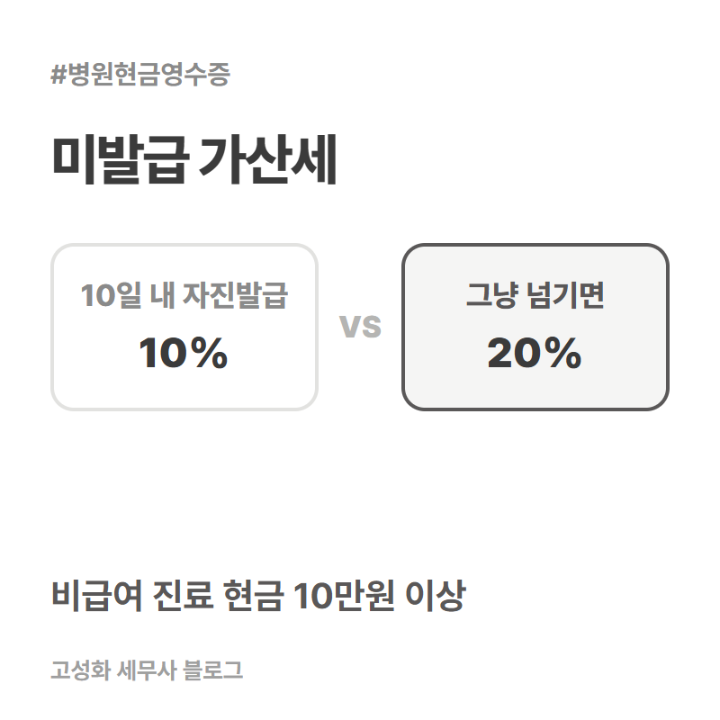
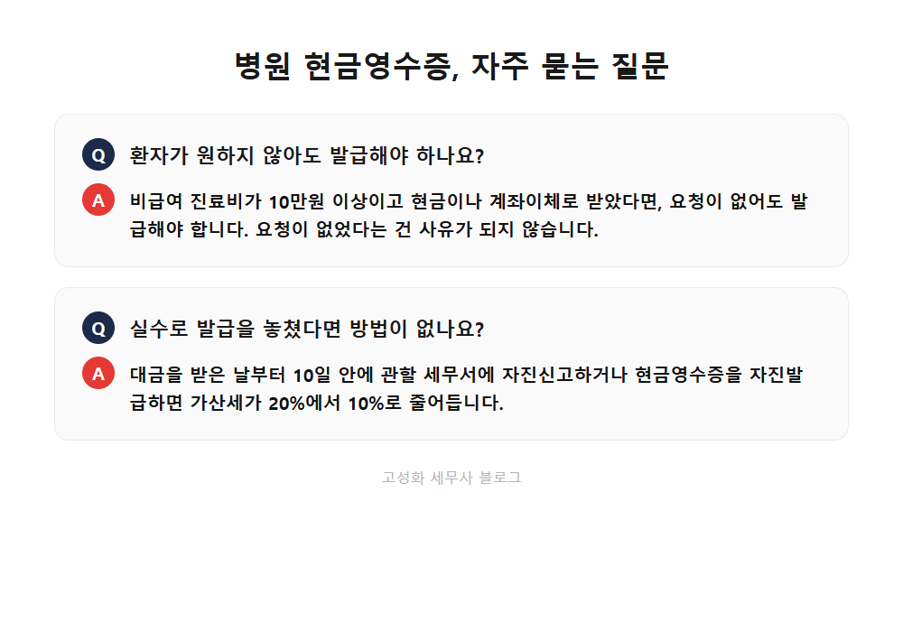

병원 현금영수증 의무발행 10만원, 미발급 가산세 20%
개원 초기 상담을 하다 보면 의외로 자주 나오는 질문이 현금영수증입니다. 매출과 비용 정리는 꼼꼼히 하시면서도, 현금으로 받은 진료비의 영수증 발급 의무는 따로 챙겨두지 않으신 경우가 많습니다.
성화세무회계에서 병의원 기장을 도와드리면서 반복해서 안내드리는 내용을 오늘 정리해보겠습니다.
이 글을 보고 계신 분은 아마 이런 상황일 겁니다. ① 비급여 진료 비중이 늘면서 현금 결제를 자주 받으시는 원장님, ② 얼마 전 현금영수증 미발급 통보를 받고 당황하신 분, ③ 개원을 앞두고 세무 체크리스트를 정리 중인 분.
병의원은 소득세법상 현금영수증 의무발행업종에 해당하고, 비급여 진료비가 10만원 이상이면 환자가 요청하지 않아도 발급해야 합니다.
- 병원 현금영수증, 언제부터 의무인가요
- 발급을 놓쳤다면 10일 안에 움직이세요
한눈에 보기



자주 묻는 질문
카드나 계좌이체로 받은 진료비도 해당하나요?
카드 결제는 대상이 아닙니다. 카드로 받으면 그 내역이 그대로 매출자료로 남기 때문입니다. 반면 계좌이체나 무통장입금은 현금으로 받은 것과 같게 봅니다. 환자분이 요청하지 않아도 10만원 이상이면 현금영수증을 발급해야 합니다. 이 부분을 카드와 묶어서 "이체는 괜찮다"고 알고 계시는 원장님이 의외로 많습니다.
급여와 비급여가 섞인 진료비는 어떻게 판단하나요?
건당 거래금액이 기준이라, 본인부담금은 빼고 비급여 항목만 따로 계산해서 10만원을 넘는지 보셔야 합니다.
환자가 현금영수증을 거부하면 안 끊어도 되나요?
아닙니다. 환자가 거부해도 원장님 쪽 발급 의무는 그대로 남습니다. 이럴 땐 무기명으로라도 발급해두시는 게 안전합니다.
정리하면
정리하자면, 병의원은 현금영수증 의무발행업종이고 비급여 진료비 10만원 이상을 현금이나 계좌이체로 받으면 요청 여부와 상관없이 발급해야 합니다. 놓쳤더라도 10일 안에 자진발급하면 가산세를 절반으로 줄일 수 있다는 점, 꼭 기억해두시면 좋겠습니다.
다만 급여·비급여 구분이나 건당 금액 산정처럼 실제로 적용할 때 헷갈리는 부분은 병원마다 진료 항목 구성이 달라서 서류를 직접 보고 판단해야 정확합니다. 지금 운영 방식이 맞는지 궁금하시면 편하게 문의 주세요.
본문 전체와 근거 조문은 블로그에서 확인하실 수 있습니다.